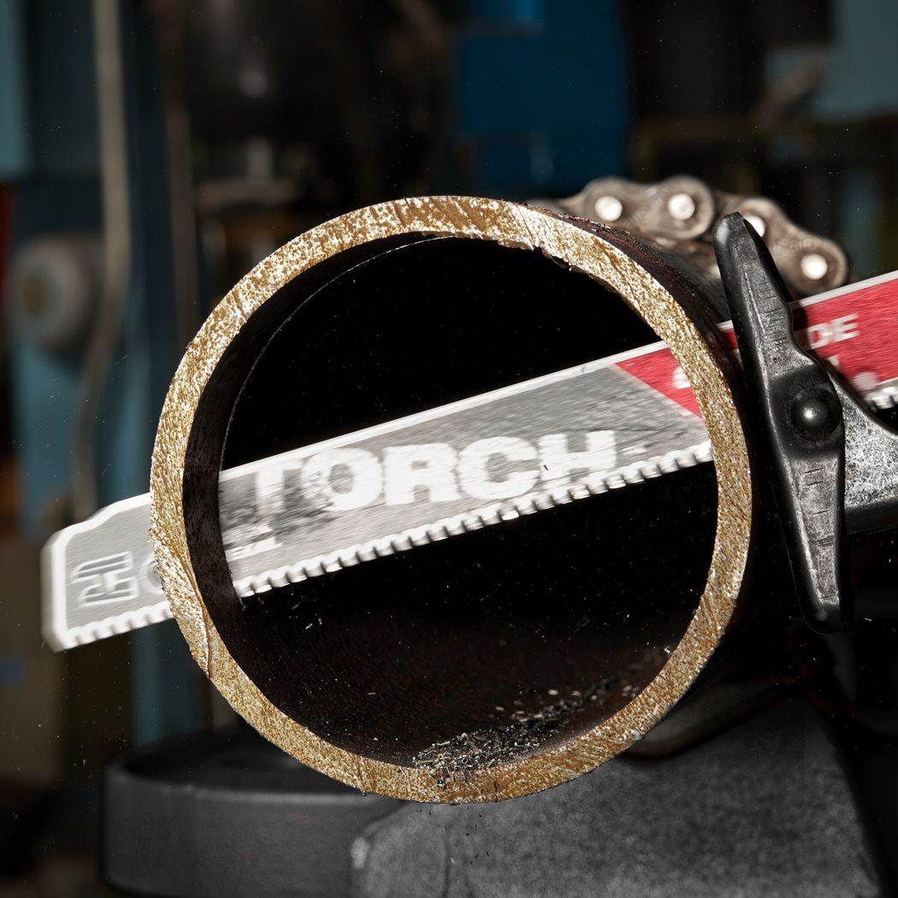
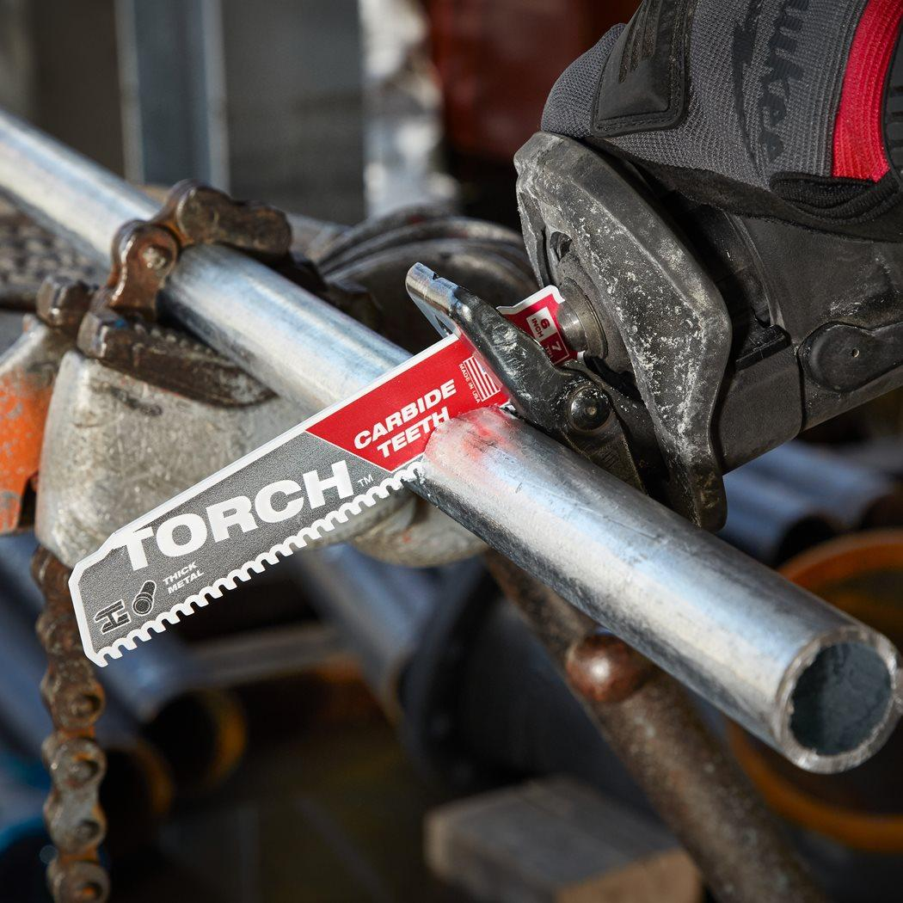
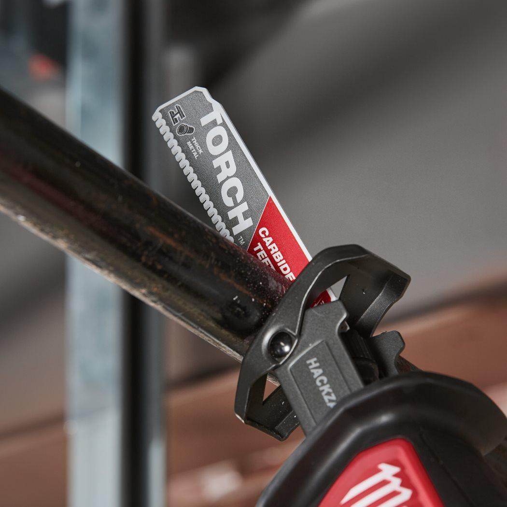
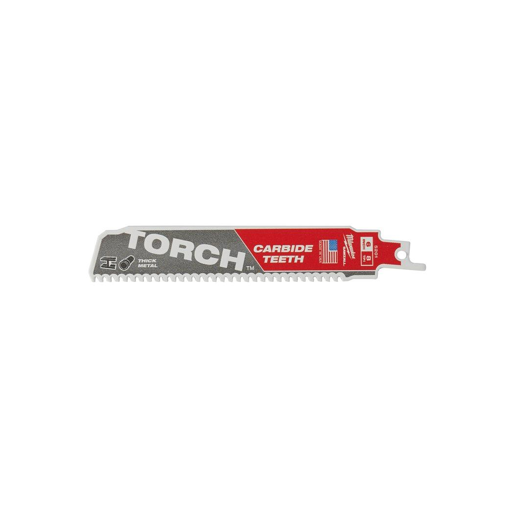

| Blade length (mm) | 150 |
| Materials suited for | Thick metal > 4 mm|Medium metal 1.5 - 4 mm|Stainless steel|Cast Iron|Non ferrous metal (Cu/Al) |
| Max. cutting capacity cast iron pipe (mm) | ⌀ 10 - 100 |
| Max. cutting capacity metal pipe ⌀ (mm) | ⌀ 10 - 100 |
| Max. cutting capacity non-ferrous metals (mm) | 5 - 14 |
| Max. cutting capacity stainless steel (mm) | 5 - 14 |
| Max. cutting capacity steel (mm) | 5 - 14 |
| Pack quantity | 1 |
| Ref. No. | S955CHC |
| Rescue | Yes |
| Article Number | 48475201 |
| EAN | 045242368341 |